福利！领取牛股和选股器
昨天 09:25:40丨阅读(86417+)
震惊股坛：
重磅来袭！魔都女股神邵庆晓，现任中国机遇基金（SMC China Fund）首席执行官，名满世界十大股神之一，携手红门资产阿尔法操盘团第22期公益讲堂开始招生了！！！庆晓女士首次将【四像选股战法】其中-擒龙-伏虎系列免费公之于众!看两市，舍我其谁，论龙虎，谁主沉浮。
释迦牟尼曾说：“伸手需要一瞬间，牵手却要很多年，无论你遇见了谁，他都是你生命该出现的人，绝非偶然。”一个人能走多远，要看他与谁同行；一个人有多优秀，要看他有谁指点；一个人有多成功，要看他与谁相伴。今天我们要给大家带来的是一颗冉冉升起的证券培训之星—《红门资产》如何长期阿尔法！！
2000年创红门资产以来，带红门资产成员实现每年300%以上的稳定收益，截止到2022年已经拥有三千万多的粉丝学员
自【红门资产】创立之后，由于其自身独特性，协助众多散户认知市场投资陷阱，并成功帮助众多学员提供法律援助及挽回损失而扬名立万，每年红门阿尔法操盘团都会招募588名内部操盘成员，现今已拥有一万二余名内部学员；在小编采访期间，【红门资产】在政策引导，也正应战略合作方的要求，扩容期间正在再次完善学员数量，预计在团队扩充至二万内部学员即可，三十年计划，任重而道远。
上方二维码，扫码即可添加
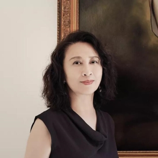
·邵庆晓·
北京人，是位女投资人
从80年代中期开始，
她先后在伦敦、中国香港、东京、纽约投资股票，
经手股票几百支。
2000年，又在上海创业，开投资公司，
并买下一栋兴国路上的三层楼老洋房。
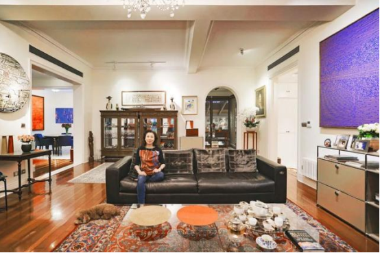
在邵庆晓上海的家中，
有不少设计家具、20多位艺术家的作品，
她却说，自己算不上真正的藏家，
工作以来，最想的是要赚更多的钱。
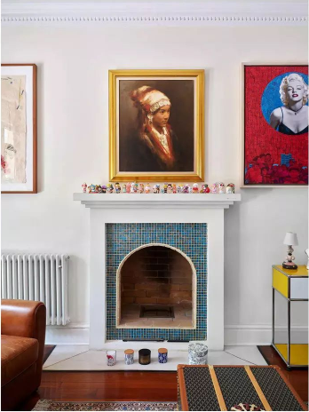
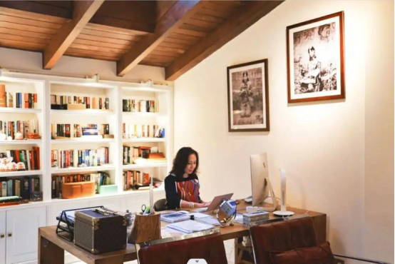
她家中的艺术品，
有90%是从慈善拍卖会上买下的，
支持自己喜欢的青年艺术家，
并赞助大学生去贫困、边远地区教书，
近8年来，影响了中国约100万的孩子。
她说：“我的人生还有两个未实现的理想：
为孩子和教育筹到更多的钱；
早日找到我的爱人。”
自述 ｜ 邵庆晓 编辑 ｜ 王微辣
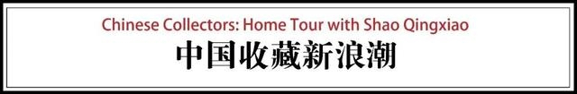
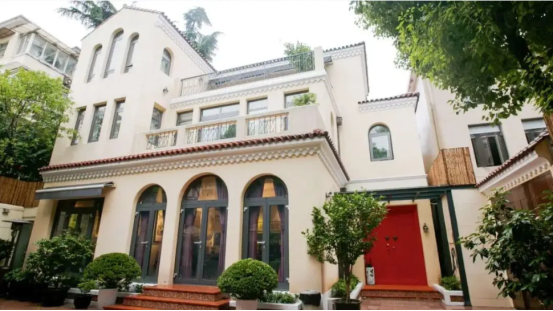
我出生、成长在北京。这30年多年里，我只做了一件事，就是股票投资。
80年代的中国还没有股市，在我大学毕业时，非常幸运地加入了英国的一家投资银行，做管培生，花一年半跑通所有部门的工作，之后被派到中国香港和日本，在那里的证券交易所里当跑单员、交易员。
80年代末，我亲历日本的泡沫经济时代，见证了每天上亿美元的股票交易。当时我就立志要成为最好的交易员，所以非常努力，每天开市的早7点到晚7点，经手20-30支股票、记住所有的数字浮动，就这样过了两年。后来我又回到英国投资银行的伦敦总部工作，积累更多股市经验。
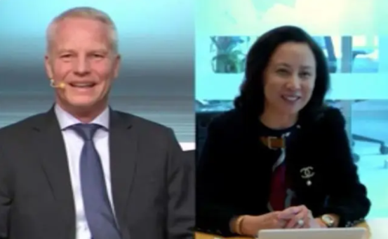
今年4月，邵庆晓对话挪威中央银行经理人
2000年，我在上海创业，有了自己的资产管理公司，经手股票有几百支，每年收益增长量达10%，也在上海安了家。
我对好的股票的定义，就是长线地投资最优质的公司，比如科技股、消费股、医药股。如果买跌了，我会等待，直到赚钱为止。
别人说我是女股神，我是不敢当的，可能只是耐心和坚持，比别人更多一些吧。
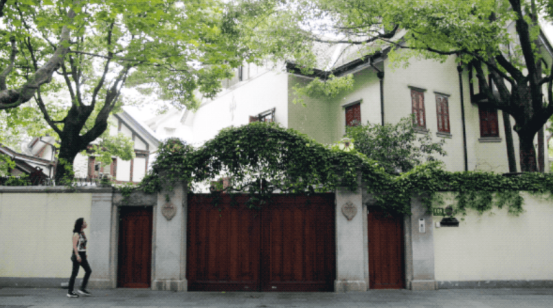
女投资人改造的老洋房
到上海后，我就在兴国路和湖南路的交界，买下了这套老洋房，面积400-500平米左右，再加一个600平米左右的院子。
我非常喜欢湖南路、兴国路、武康路、高安路、高邮路，几乎每天都在这些街道里一个人走路，感受它的历史，再看一些年轻人，他们都在干什么。
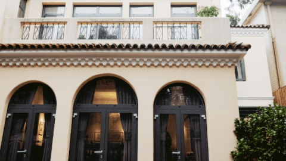
我把房子重新进行了装修。它是1920年代由一个西班牙建筑师建造的，外观恢复了建筑的原样。
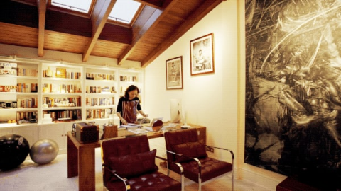
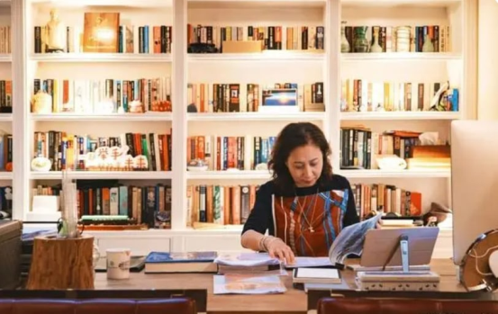
重建这个房子的第一个考虑，我希望有一个我自己的很舒服的书房。这是我待得最久的地方，工作、读书，有时候从早上8点坐到晚上8点，在里面待上12个小时。
我的兴趣爱好就是看书、听书，平均一年150-200本，十几年里看了两千多本书。人这一生，可能顺的时候是大部分时间；当遇到困难，读书让我非常冷静，给了我很多智慧。
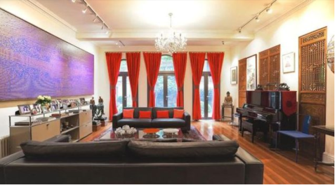
家里有两个客厅。一个是朋友来，用来招待朋友的。
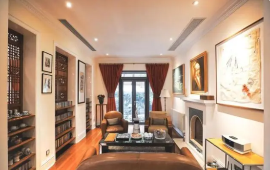
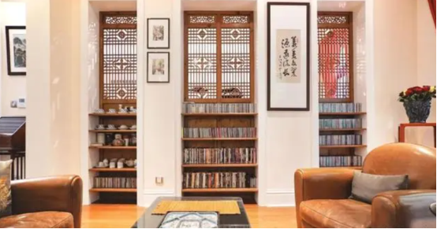
另外一个，当我刚搬来上海，我的大女儿才3岁，小女儿1岁，希望在一楼有一个让她们玩耍的空间，孩子们可以跑来跑去。
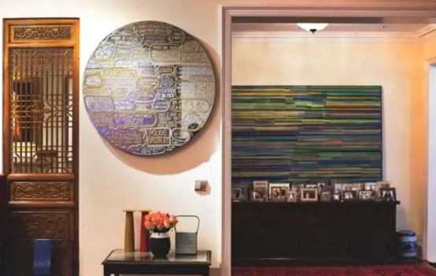
软装方面，家里每一个地方都有“上下”的作品。我和设计师蒋琼耳是很好的朋友，过去十年，我看她专注地把中国的手工艺带给全世界，让我非常感动。只要有机会，每一件作品都支持他们。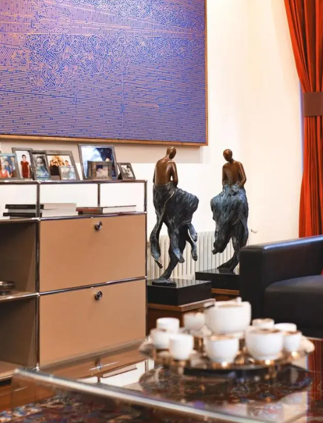
还有几件瑞士USM的柜子，以拼装组合的形式做成，有很多画廊、美术馆都在用，我也非常喜欢。
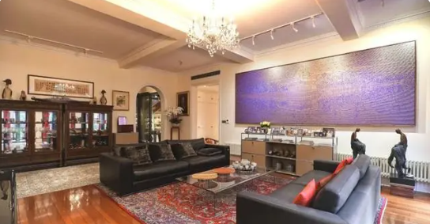
地毯都是我的好朋友，中国最大的老地毯藏家秦岩，每年去伊朗收来的，有一些就放在我的家里。
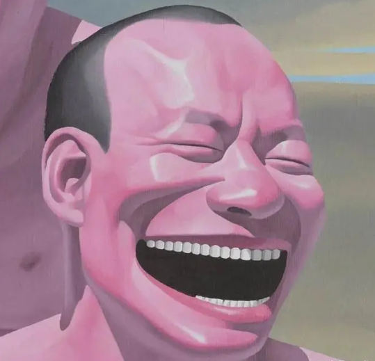
自然而然的艺术收藏
我收藏的第一件艺术品，是1997年在香港的Schoeni Gallery买的，岳敏君的这幅无题。画上是他标志性的人头像，笑得所有的牙齿都露出来了。
我很喜欢这张画，因为我自己本人也很喜欢笑，我觉得笑容会给我们带来很多好运。也就是因为我喜欢笑，生活才没有这么糟糕。
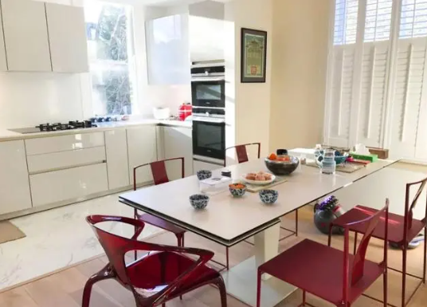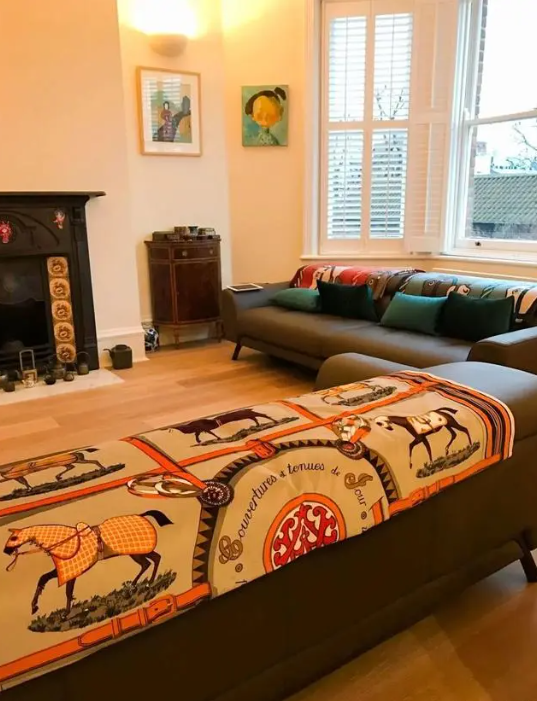
邵庆晓伦敦的家
后来，我也开始买一些艺术作品，收集了二十几个艺术家作品，有：李山、周铁海、徐震、陆新建、严培明、张云垚、曲丰国、张力、欧阳春、牟恒、Kiki Smith、施力仁、吴静茹、蔡志松，等等。
这些作品，主要在我上海的家里、公司里，还有一部分，在伦敦的家里，香港的家里和公司里。
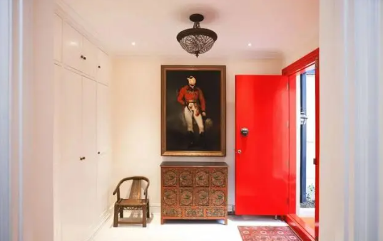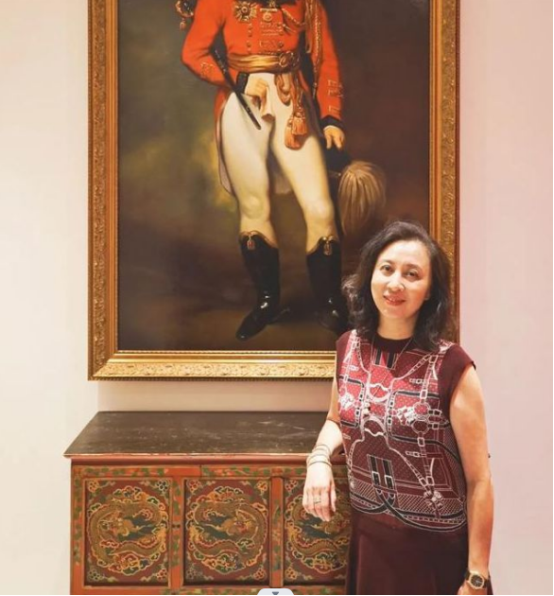
在玄关的这一幅，是艺术家周铁海的骆驼系列，把西方名画里的人物变成骆驼。大家都觉得骆驼很愚笨，艺术家把它的头装在人的身体上，带给我一种很谦逊的精神。
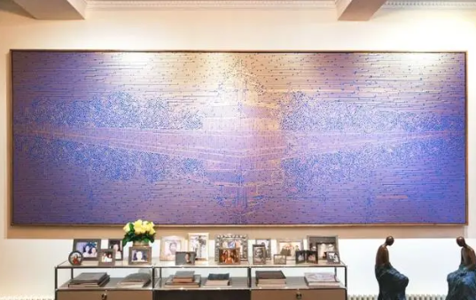
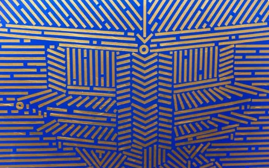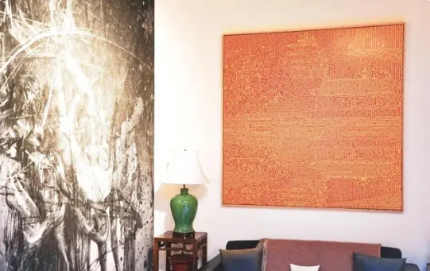
我有两幅陆新建画的角楼。我小时候经常去故宫，还去它旁边的公园去爬山，每一次看见这个作品，都带回来很多童年的回忆。
陆新建老师的创作精神也非常打动我。他从农村出身，小时候生活非常美好，但非常贫穷，直到他遇到了一个美术老师，他才知道山外还有可以学习艺术的大学。他的“城市基因”系列，用抽象的线条把每个城市描绘得栩栩如生。
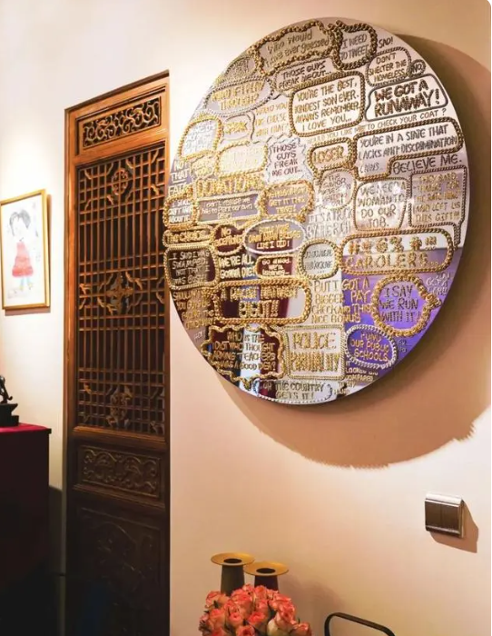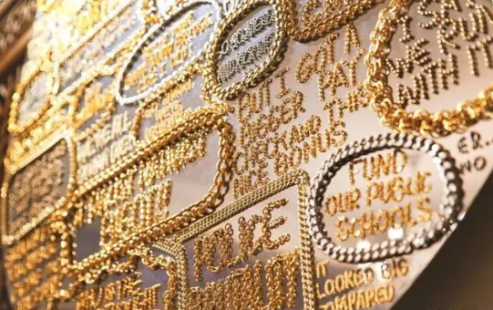
客厅有一幅徐震的作品，两年前他为“美丽中国”（教育公益机构）捐赠了一幅非常大的《金属的语言》，我很喜欢，但是当时没买到。后来我就去拜访他的工作室，他又帮我做了一幅，挂在我的客厅里。
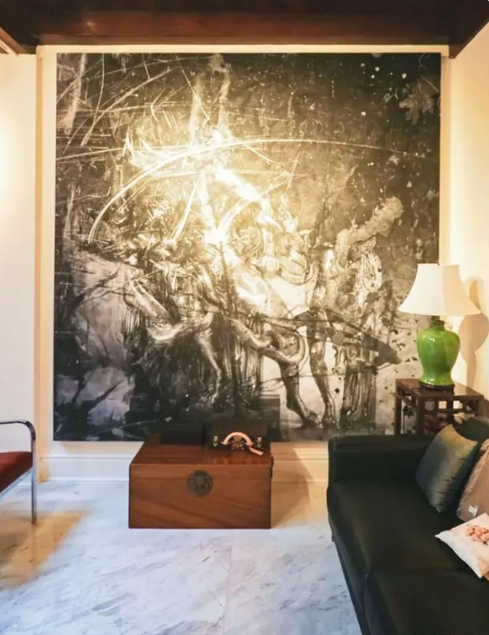
书房有一大幅，是一个年轻的艺术家，叫张云垚，他做在毛毡上的一个历史画。我的女儿们和我一起去画廊，一进去看到这幅画就喜欢上了，它带给我们一种气宇轩昂的气质。
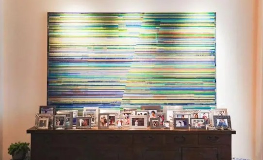
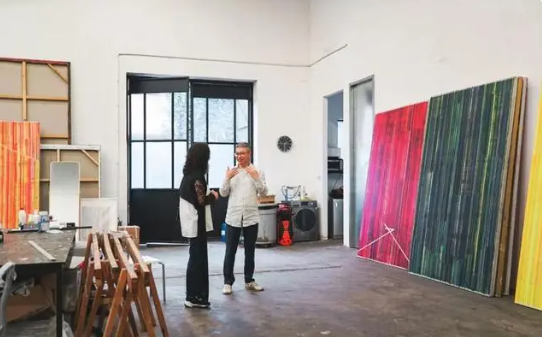
拜访艺术家曲丰国工作室
这是艺术家曲丰国的作品，他的《四季》系列表达他对时间的感受。不管你愿不愿意，他都把你带进了他的世界里。
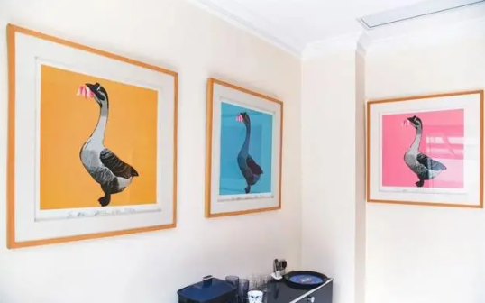
我买过七张李山的鹅，代表一个星期的七天，有七种不同的颜色，每只鹅上都带了一朵花，为我每天带来了不同的快乐。
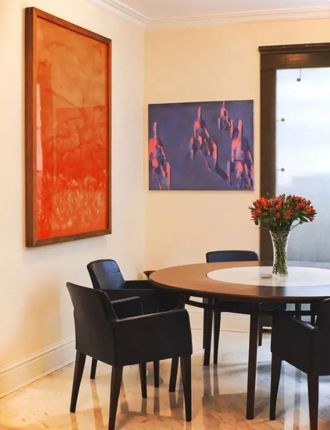
旅德画家牟恒的这件骑自行车的画，红的在伦敦，蓝的在上海。我小的时候就是骑着自行车去上学、买菜、找朋友，它带回了很多小时候的记忆。
严培明的水彩画，它是红色的玫瑰。我为我自己这一生买的玫瑰，都可以放在这里。
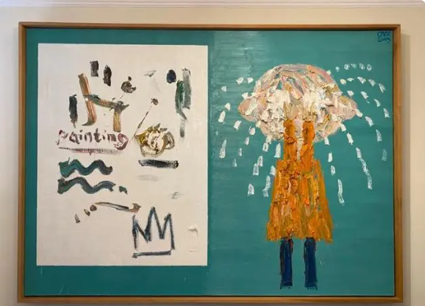
艺术家欧阳春的这件作品，画的是一个小女孩在哭，我把它挂在了伦敦的家里。我的两个女儿现在在伦敦学习，我希望她们看见这幅画以后从中得到勇气。遇到困难的时候，哭是没有用的。
参加美丽中国慈善义拍
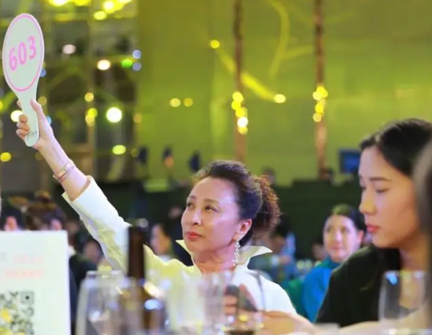
热爱教育的慈善家
其实我是做投资的，不是一个收藏家。对我来说，艺术收藏有两个目的：
第一，自己喜欢，自然而然，乐在其中；第二，我有90%的收藏是与教育有关的。
我非常热爱教育。八年前，我加入了“美丽中国”理事会，每年从最优秀的大学里选出700-1000个毕业生，送去贫困和边远地区支教，两年一轮换。
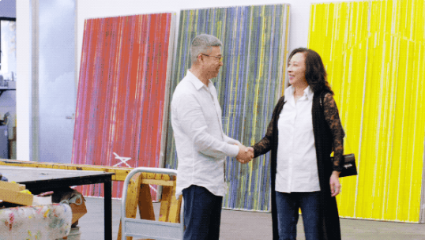
有一些有爱心的中国艺术家，愿意把他们的作品无私地捐给美丽中国，再由我们通过慈善晚宴把作品拍卖出去，或买下来成为自己的收藏，慢慢就结识到了这样的艺术家们。
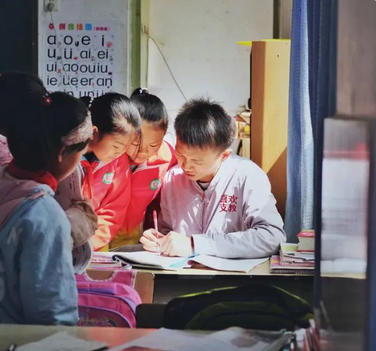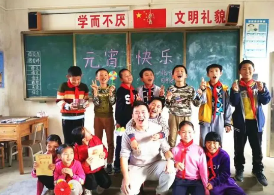
支教老师和孩子们
每年我都有一笔固定的资金支持慈善教育项目。这些钱都花在了支教老师身上，把同等的教育水平、陪伴、希望和爱，带给贫困的孩子们。所以如果有一些需要支持的艺术家或艺术拍品，我都会考虑。
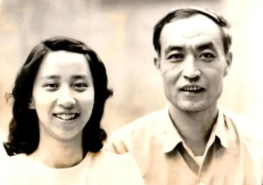
18岁的邵庆晓与父亲
邵庆晓与家人
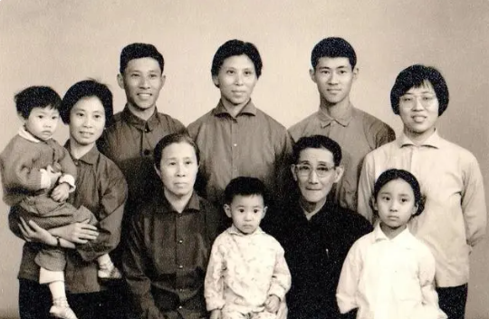
我全家都是中国教育的受益者。
我的外公出生于四川，家庭非常贫穷，父亲很早去世，母亲一个人靠洗衣服的工作把三个孩子带大。这三个孩子都非常努力，但家里的钱只够大儿子去上小学，所以两个弟弟就在窗外听了四年课，这么坚持下来。
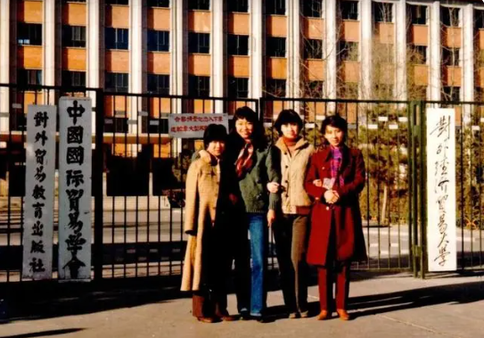
邵庆晓与大学同学
当时清华学堂去四川招生，招募广告上说，过去考试能管一顿饭。三兄弟为了这一顿饭就去考试，其中两个都考上了清华。
我的外公当时作为“庚子赔款”的第一批留学生，去了美国的斯坦佛大学拿了学士、硕士，又去密歇根大学拿了博士，最后回国，成了中国很有名的一个植物学家。
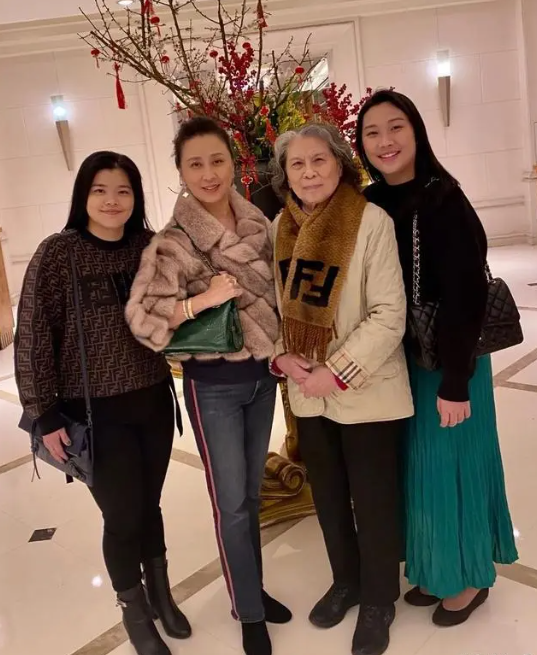
邵庆晓和母亲及两个女儿
从我外公这一辈人身上，可以看出，教育改变了他们，才有了我的父辈、我们这一辈。现在我觉得，作为父母，教育也是我们能给孩子的最好的礼物。
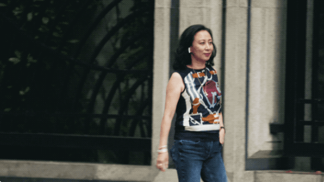
关于投资和收藏的建议
我热爱投资，它占我生活的170%-180%。
我每天起得很早，有时候5点钟起床，先锻炼一下，接下来看一下全球市场的情况。8:45分，开晨会，花40分钟电话会议了解一下中国的市场。然后进公司，跟我的研究团队进行交流。我也有很多时间花在路上，拜访客户、看上市公司。
每天都在忙碌、学习和进步，我的人生还有两个未实现的理想——我希望为孩子、为中国的教育赚更多的钱；我希望早日找到我的爱人。
兴国路上的三层楼老洋房，是邵庆晓在上海的家，有不少设计家具、20多位艺术家的作品。她说：“我的人生还有两个未实现的理想：为孩子和教育筹到更多的钱；早日找到我的爱人。”
扫描上面微信客服二维码即可与女神零距离接触或点击微信客服链接：https://work.weixin.qq.com/kfid/kfcb80a9305d4c80860?
名额有限，派发完毕将不再开放。
机会永远是留给有准备的人！！！
红尘路上，一种缘分，没有预约，但凡遇见，就是温暖。
【关于邵庆晓创立红门资管】

投资经验：超过30年全球金融市场从业经验，对中国A股、香港H股及海外上市中资企业具有丰富的研究和投资经验。
2000年创立红门资产，03年正式注册。
专注于中国股票市场的价值投资
指导原则始终如一——利用对中国市场的广泛了解，为希望把握中国经济增长机会的学员提供最好的投资专业知识和服务，方法是构建优秀企业的多元化集中价值投资组合，提供长期阿尔法收益。
红门资产团队有着核心成员，大中华班专注管理离岸中国多头基金，以及为内部成员一对一指导国际国内投资经验；其中包括红门中的银行，家族办公室，养老基金和主权财富基金等。
红门投资团队总结：中国股票市场研究不足，与西方相比表现出高度的低效率。
低效的市场意味着有空间筛选股票范围并识别定价错误或被低估的公司。这一前提构成了投资团队基本面驱动选股的信念和承诺的基础。
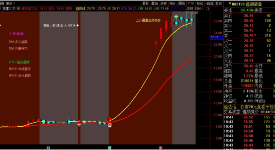
抄底之王选股器
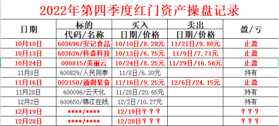
领取红门独家福利
凡是加入粉丝交流群的粉丝都能领取【红门抄底之王选股器】选股指标一份，实盘期间提示大盘行情走势预判，闲余时间个人实战技巧分享，视行情不定时分享短线行情个股，12月19号和28号还有两支预期收益28%的金股无偿公开。素有“魔都女股神”之称的庆晓老师，不合作，不分成，不卖软件！有自己的独门选股绝招，也都会教授给广大粉丝朋友，只为吸纳潜力人才，扩张红门团队规模！
扫描上面微信客服二维码即可与女神零距离接触或点击微信客服链接：https://work.weixin.qq.com/kfid/kfcb80a9305d4c80860?
名额有限，派发完毕将不再开放。
机会永远是留给有准备的人！！！
红尘路上，一种缘分，没有预约，但凡遇见，就是温暖。
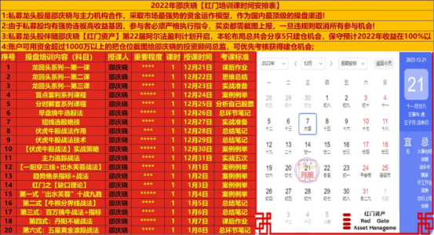